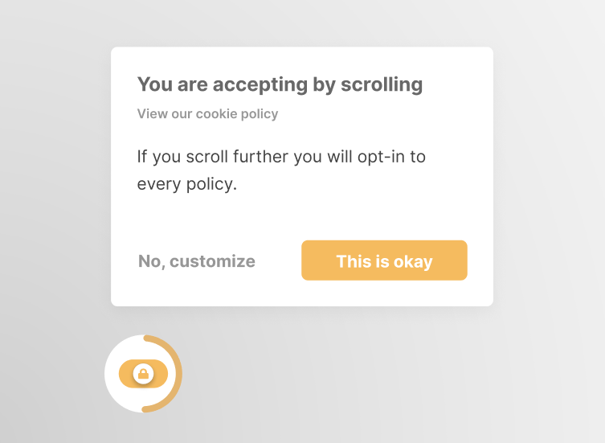

Privacy Zuckering
Dit Dark Pattern is tegenwoordig aan de orde van de dag. Vernoemd naar Facebook-CEO Mark Zuckerberg, gebeurt dit dark pattern wanneer een product meer informatie over de gebruikers verzamelt en deelt dan ze ooit van
plan waren te delen. Door te weinig of niet goed geformuleerde informatie, klikken gebruikers soms makkelijk een checkbox aan, of accepteren bepaalde voorwaarden. Dit zijn voorwaarden die veel meer informatie van
hen verzameld, dan dat bekend en gewild is. Ook de cookiemeldingen op vele websites zijn hier een praktisch voorbeeld van.

A love letter (z.d.). [Foto]. Geraadpleegd van https://metomic.io/blog/main/2019/04/08/a-love-letter.html